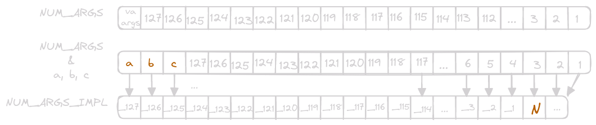

C Generics
Introduction
If you’ve coded in C for any amount of time you probably think that C doesn’t have generics. After all, C++ clearly has generics, so if C did surely they would look the same, right?
Well, you are sort of right, and sort of wrong. See, C does not have generics in the regular sense, where the compiler will figure out which types you are using at compile time and generate the correct code for the generic function or data structure. C has _Generic, which is a compile time macro that chooses between a set list of options based on the type of the argument it was passed.
You may ask, how is this any different from an overloaded function? From what I can tell they’re the exact same thing, with both choosing the correct path at compile time. Sounds simple enough, let’s just use function overloading instead.
int add(int a, int b) { return a + b; } float add(float a, float b) { return a + b; } int main() { int i_result = add(2, 4); float f_result = add(2.0, 4.0); }
12:7: error: conflicting types for ‘add’; have ‘float(float, float)’ 12 | float add(float a, float b) { | ^~~ 8:5: note: previous definition of ‘add’ with type ‘int(int, int)’ 8 | int add(int a, int b) { | ^~~
Ohh… that didn’t work.
As you may know, we don’t have the ability to define overloaded functions in C. This example is small, but imagine having to call an entirely different min or max function for each different type of comparison, it would make your unecessarily large. We can fix this add example fairly easily.
#include <stdio.h> #define add(a, b) \ _Generic((a), \ int: add_int, \ double: add_double) (a,b) int add_int(int a, int b) { return a + b; } double add_double(double a, double b) { return a + b; } int main() { int res_a = add(3, 4); double res_b = add(3.0, 4.0); printf("int: %d\n", res_a); printf("double: %f\n", res_b); }
int: 7 double: 7.000000
We will quickly break this down before we get in to more complicated implementations later.
#define add(a, b), we start by defining our macro named “add”, which takes 2 parameters `a` and `b`_Generic((a), int: add_int, double: add_double), this is our compile time “switch statement”, which chooses the correct function based on the type of the first argument `a`(a,b), the last block tells the compiler that we are passing the arguments `a` and `b` to the selected function
In this article we are going to take a look at a few example use cases where generics may help us write more concise code, that vastly simplifies our API.
Making a better Print Function
Any C programmer has learned to either love or hate printf, I personally prefer it over a C++ ostream, but as I’ve learned from other languages, there can an even easier way to print. In both javascript and vlang you can use the concept of template literals (mdn, vlang). Template literals allow the entire string to be defined at once, with each variable or expression residing within a ${} block.
js
const name = "John"; const age = 32 console.log(`Hi there my name is ${name} and I am ${age} years old.`)
Hi there my name is John and I am 32 years old.
v
name := "John" age := 32 println('Hi there my name is ${name} and I am ${age} years old.')
Hi there my name is John and I am 32 years old.
The ability to place variables inline with the rest of the string increases the speed of iteration, and avoids errors that may occur with a format specifier does not match its argument. It would be really nice if we had this in C, even if it just used for debugging and development.
Let’s see how we can use _Generic to achieve a similar behavior to what we saw above.
Implementation
Our first step is to figure out how we can convert different data types into their string representation. This is where _Generic will be used in our implementation.
#define $(var) \ _Generic((var), \ int8_t: auto_asprintf("%d", var), \ int16_t: auto_asprintf("%d", var), \ int32_t: auto_asprintf("%d", var), \ int64_t: auto_asprintf("%ld", var), \ uint8_t: auto_asprintf("%u", var), \ uint16_t: auto_asprintf("%u", var), \ uint32_t: auto_asprintf("%u", var), \ uint64_t: auto_asprintf("%lu", var), \ float: auto_asprintf("%f", var), \ double: auto_asprintf("%f", var), \ char *: auto_asprintf("%s", var), \ const char *: auto_asprintf("%s", var))
There are a lot of line here, but the logic isn’t too complex. We start out with the function macro definition `$`, keeping the same symbol as we saw with js/v above. This function accepts one parameter, which we will then use to dispatch to the various iterations of auto_asprintf below. The only difference here is what is being passed as the function.
Now we can take a look at this auto_asprintf function, which essentially wraps asprintf to return a char* directly. This will make our life much easier when it comes to printing, and freeing the allocated memory.
char *auto_asprintf(const char *format, ...) { va_list args; va_start(args, format); char *str = NULL; int length = vasprintf(&str, format, args); va_end(args); if (length == -1) { fprintf(stderr, "Failed to allocate memory\n"); return NULL; } return str; }
All we do is wrap asprintf, check for memory allocation errors, and return the string pointer. We use a variadic function here, which I will explain in just a moment.
I guess now would be a good time to look at how we intend to use our new print function. This should give us a better idea of how to implement the behavior.
int main() { println($(5), $(" "), $(3.14)); }
Not the prettiest print function ever, but maybe it’s better than printf (It’s not, I’m just optimistic the DX will be better). So println will be a variadic function taking any number of arguments, then printing them out. You have certainly used a variadic function before, but it is unlikely you have had to write one.
void println(int num_args, ...) { char buf[4096] = {0}; char *pos = buf; va_list args; va_start(args, num_args); for (int i = 0; i < num_args; i++) { char *str_val = va_arg(args, char *); pos = stpcpy(pos, str_val); free(str_val); } va_end(args); buf[4095] = '\0'; ssize_t bytes_written = write(STDOUT_FILENO, buf, pos - buf); if (bytes_written == -1) { perror("write"); exit(1); } }
- A variadic function is characterized by its last argument being
..., which represents its list of any number of arguments (although it is limited to 127) - To reference any of the elements in this last we first need a
va_list, which we then initialize withva_start - The arguments are then looped through, with the ability to extract one argument at a time with
va_arg(args, typename) - To cleanup resources
va_endis called one you are done with the list
You may notice something I omitted in the explanation, the number of arguments. In C there is no way at compile or run time to get the number of arguments in a va_list. Well that sucks.
So now our users will have to make their first argument the number of arguments. That seems a bit redundant, and now we’re not looking much beter than printf.
int main() { println(3, $(5), $(" "), $(3.14)); // ^ // 3 arguments being passed }
5 3.140000
There we go! A slight improvement over printf? Maybe? Either way it was good to explore the use of _Generic. It reminds me a bit more of C++ ostream than I would like, but I can get over that. My biggest gripe here are that spaces have to be specified manually by inserting " " in between variables. That is a challenge that is probably best solved in another language, at another time.
Improvements
Earlier I mentioned how having to specify the number of arguments seems a bit redundant. Can we solve this? We can!
We said that variadic functions can take up to a maximum of 127 arguments, so maybe there is a way we can hardcode 127 unique values. This is going to be a very hacky macro, and is totally optional, but it will make the user experience better.
// Helper macro for counting the number of arguments #define NUM_ARGS(...) \ NUM_ARGS_IMPL(__VA_ARGS__, 127, 126, 125, 124, 123, 122, 121, 120, 119, 118, \ 117, 116, 115, 114, 113, 112, 111, 110, 109, 108, 107, 106, \ 105, 104, 103, 102, 101, 100, 99, 98, 97, 96, 95, 94, 93, 92, \ 91, 90, 89, 88, 87, 86, 85, 84, 83, 82, 81, 80, 79, 78, 77, \ 76, 75, 74, 73, 72, 71, 70, 69, 68, 67, 66, 65, 64, 63, 62, \ 61, 60, 59, 58, 57, 56, 55, 54, 53, 52, 51, 50, 49, 48, 47, \ 46, 45, 44, 43, 42, 41, 40, 39, 38, 37, 36, 35, 34, 33, 32, \ 31, 30, 29, 28, 27, 26, 25, 24, 23, 22, 21, 20, 19, 18, 17, \ 16, 15, 14, 13, 12, 11, 10, 9, 8, 7, 6, 5, 4, 3, 2, 1) // Helper macro for expanding the arguments #define NUM_ARGS_IMPL( \ _127, _126, _125, _124, _123, _122, _121, _120, _119, _118, _117, _116, \ _115, _114, _113, _112, _111, _110, _109, _108, _107, _106, _105, _104, \ _103, _102, _101, _100, _99, _98, _97, _96, _95, _94, _93, _92, _91, _90, \ _89, _88, _87, _86, _85, _84, _83, _82, _81, _80, _79, _78, _77, _76, _75, \ _74, _73, _72, _71, _70, _69, _68, _67, _66, _65, _64, _63, _62, _61, _60, \ _59, _58, _57, _56, _55, _54, _53, _52, _51, _50, _49, _48, _47, _46, _45, \ _44, _43, _42, _41, _40, _39, _38, _37, _36, _35, _34, _33, _32, _31, _30, \ _29, _28, _27, _26, _25, _24, _23, _22, _21, _20, _19, _18, _17, _16, _15, \ _14, _13, _12, _11, _10, _9, _8, _7, _6, _5, _4, _3, _2, _1, N, ...) \ N
The way this works is a bit complicated, but I will try my best to explain it with the variables a, b, and c

- We call
NUM_ARGS(a, b, c)with all of our arguments - We then call
NUM_ARGS_IMPL(a, b, c, 127, 126, ..., 3, 2, 1) - It may be hard to tell, but
NUM_ARGS_IMPLis a giant function that takes 129 different arguments, named_127-_1,N, and finally its variadic list at the end... a, b, ccauses the original list of numbers to shift to the right by3positions, so that the number in argumentNends up 3! With 2 and 1 spilling off the end into the variadic list- Finally we are returned the value
3